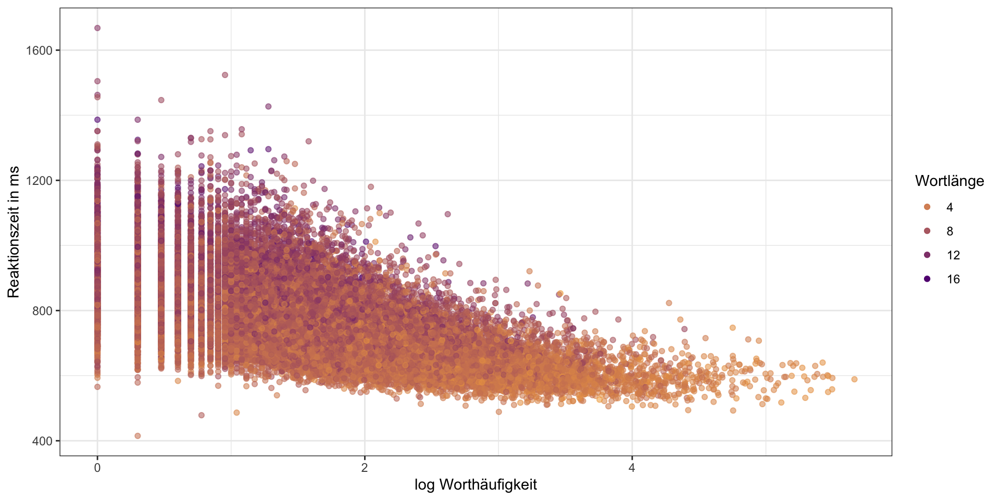
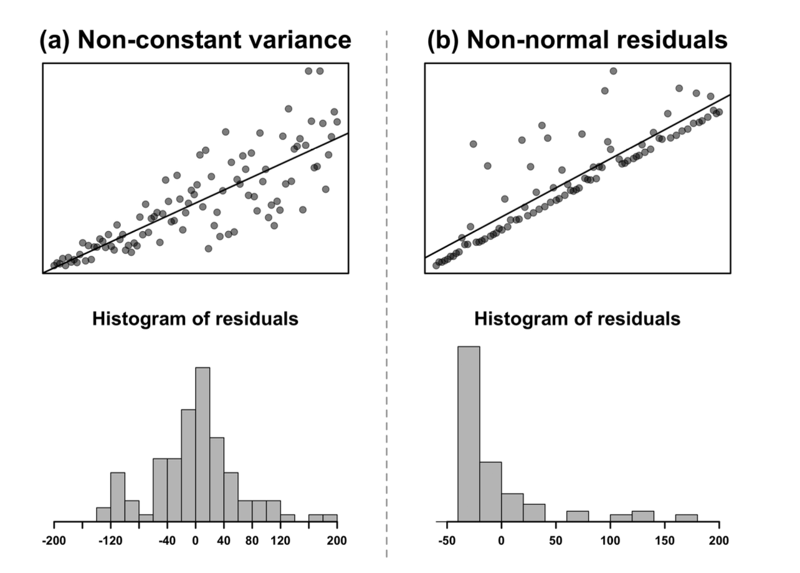

(Intercept) Log10Freq
906.70366 -86.43489 (Intercept) Log10Freq
2.95862958 -0.04902523 Sitzung 6: Multiple Lineare Regression und Kategoriale Variablen
eva.scheel-huber@uni-koeln.de
25. 11. 2026
Die beiden Parameter/Koeffizienten, die ein Lineares Regressionsmodell definieren:
Ausschreiben der allgemeinen Formel:
\(y = b_{0} + b_{1} * x\)
Residuendarstellung von Winter (2020) (S. 73)
Was zeigt uns der \(R^{2}\)?
# A tibble: 2 × 3
names x ms
<chr> <dbl> <dbl>
1 (Intercept) 2.96 909.
2 Log10Freq -0.0490 0.893Intercept des zweiten Modells unterscheidet sich leicht von dem Intercept des ersten Modells.
Interpretation:
Z-Werte
Call:
lm(formula = z_score ~ 1 + Log10Freq, data = word_rts)
Residuals:
Min 1Q Median 3Q Max
-3.7430 -0.5278 -0.0984 0.4152 6.1191
Coefficients:
Estimate Std. Error t value Pr(>|t|)
(Intercept) 1.099811 0.008801 125.0 <2e-16 ***
Log10Freq -0.694738 0.004844 -143.4 <2e-16 ***
---
Signif. codes: 0 '***' 0.001 '**' 0.01 '*' 0.05 '.' 0.1 ' ' 1
Residual standard error: 0.7852 on 33073 degrees of freedom
Multiple R-squared: 0.3834, Adjusted R-squared: 0.3834
F-statistic: 2.057e+04 on 1 and 33073 DF, p-value: < 2.2e-16Zentrierte Werte
Call:
lm(formula = rt_c ~ 1 + Log10Freq, data = word_rts)
Residuals:
Min 1Q Median 3Q Max
-465.68 -65.67 -12.25 51.66 761.30
Coefficients:
Estimate Std. Error t value Pr(>|t|)
(Intercept) 136.8316 1.0950 125.0 <2e-16 ***
Log10Freq -86.4349 0.6027 -143.4 <2e-16 ***
---
Signif. codes: 0 '***' 0.001 '**' 0.01 '*' 0.05 '.' 0.1 ' ' 1
Residual standard error: 97.69 on 33073 degrees of freedom
Multiple R-squared: 0.3834, Adjusted R-squared: 0.3834
F-statistic: 2.057e+04 on 1 and 33073 DF, p-value: < 2.2e-16Gleiche Steigung wie im ersten Modell!
von einer zu mehreren Prädiktorvariablen
\(y = b_{0} + b_{1}x + b_{2}x + ...+ e\)
→ mehr als nur einen Steigungskoeffizienten
Reaktionszeit: Worthäufigkeit und Wortlänge?

Reaktionszeit: Worthäufigkeit und Wortlänge?
\(y = b_{0} + b_{1}\text{Log10Freq} + e\)
Call:
lm(formula = log_rt ~ 1 + Log10Freq, data = rts)
Residuals:
Min 1Q Median 3Q Max
-0.32582 -0.03593 -0.00397 0.03148 0.27107
Coefficients:
Estimate Std. Error t value Pr(>|t|)
(Intercept) 2.9586296 0.0005816 5087.0 <2e-16 ***
Log10Freq -0.0490252 0.0003201 -153.1 <2e-16 ***
---
Signif. codes: 0 '***' 0.001 '**' 0.01 '*' 0.05 '.' 0.1 ' ' 1
Residual standard error: 0.05189 on 33073 degrees of freedom
Multiple R-squared: 0.4149, Adjusted R-squared: 0.4149
F-statistic: 2.345e+04 on 1 and 33073 DF, p-value: < 2.2e-16\(y = b_{0} + b_{1}\text{Log10Freq} + b_{2}\text{Wortlänge} + e\)
Call:
lm(formula = log_rt ~ 1 + Log10Freq + length, data = rts)
Residuals:
Min 1Q Median 3Q Max
-0.296134 -0.032751 -0.003248 0.028867 0.252636
Coefficients:
Estimate Std. Error t value Pr(>|t|)
(Intercept) 2.8738734 0.0011540 2490.41 <2e-16 ***
Log10Freq -0.0391656 0.0003149 -124.37 <2e-16 ***
length 0.0104197 0.0001261 82.66 <2e-16 ***
---
Signif. codes: 0 '***' 0.001 '**' 0.01 '*' 0.05 '.' 0.1 ' ' 1
Residual standard error: 0.04724 on 33072 degrees of freedom
Multiple R-squared: 0.5151, Adjusted R-squared: 0.515
F-statistic: 1.756e+04 on 2 and 33072 DF, p-value: < 2.2e-16Mit der Prädiktorvariable Wortlänge ist der \(R^{2}\) von 0.41 auf 0.52 gestiegen. Wieso?
Was hat sich sonst noch verändert?
Was zeigen die Koeffizienten?
\(y = b_{0} + b_{1}\text{Log10Freq} + b_{2} * \text{Wortlänge} + e\)
Unsere angepassten Koeffizienten auf zwei Dezimalstellen gerundet:
(Intercept) Log10Freq length
2.87 -0.04 0.01 \(\text{log RT} = 2,87 + -0,04* \times \text{Log10Freq} + 0,01 \times \text{Wortlänge}\)
Unsere angepassten Koeffizienten auf zwei Dezimalstellen gerundet:
(Intercept) Log10Freq length
2.87 -0.04 0.01 \(\text{log RT} = 2,87 + -0,04* \times \text{Log10Freq} + 0,01 \times \text{Wortlänge}\)
fiktives Wort sabi mit Worthäufigkeit 14 (\(log_{10}(14) = 1.15\)) und Wortlänge 14
fiktives Wort pagsasabihan mit Worthäufigkeit 14 (\(log_{10}(14) = 1.15\)
die vorhergesagte Reaktionszeit unterscheidet sich um 0.08 zwischen den beiden fiktiven Wörtern, was 1.2ms entspricht.
In der Modellzusammenfassung in R wird sowohl der \(R^{2}\) wie auch der \(Adjusted R^{2}\) angegeben
Call:
lm(formula = log_rt ~ 1 + Log10Freq + length, data = rts)
Residuals:
Min 1Q Median 3Q Max
-0.296134 -0.032751 -0.003248 0.028867 0.252636
Coefficients:
Estimate Std. Error t value Pr(>|t|)
(Intercept) 2.8738734 0.0011540 2490.41 <2e-16 ***
Log10Freq -0.0391656 0.0003149 -124.37 <2e-16 ***
length 0.0104197 0.0001261 82.66 <2e-16 ***
---
Signif. codes: 0 '***' 0.001 '**' 0.01 '*' 0.05 '.' 0.1 ' ' 1
Residual standard error: 0.04724 on 33072 degrees of freedom
Multiple R-squared: 0.5151, Adjusted R-squared: 0.515
F-statistic: 1.756e+04 on 2 and 33072 DF, p-value: < 2.2e-16Wir nehmen an, dass die Residuen normalverteilt (Normalität) sind und dass ihre Varianz konstant ist (Homoskedastizität)

Figure 4.4 in Winter (2020), p.75
In unserem Modell (Reaktionszeit ~ Wortlänge + Worthäufigkeit)
Zuerst passen wir ein Modell (\(b_{0} = 10\), \(b_{1} = 3\)) mit zufallsgenerierten Daten an:
# A tibble: 2 × 2
term estimate
<chr> <dbl>
1 (Intercept) 9.99
2 x 2.94Nun fügen wir eine weitere Prädiktorvariable mit fast den genau gleichen Werten hinzu:
In R können wir vom Package car die Funktion vif() benutzen um die variance inflation factors zu berechnen. Variance inflation factors berechnen wie stark eine Prädiktorvariable durch eine andere erfasst werden kann.
Unterschiedliche Empfehlungen, ab wann ein vif problematisch ist. Einige sagen ab 10, andere 3-4 (Winter 2020).
Ziel: Eigenständig das Gelernte an einem “echten” Datensatz umsetzen
Das heißt:
Option 1: Zwei Datensätze, aus publizierten Artikeln:
Mehr Informationen findet ihr im Dokument Projektarbeit.pdf
Option 2: Datensatz eurer Wahl
Antwortvariable sollte kategorisch (binär) oder numerisch sein
Option 3: Datensatz aus Winter (2020) oder Levshina (2015)
Außer die Datensätze, die wir im Unterricht schon benutzt haben.
Fragen?